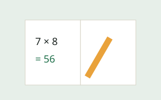
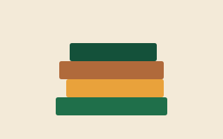
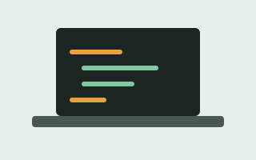

Reforço Escolar
Público: 6 a 14 anos

Acompanhamento em português e matemática, com diagnóstico individual no início de cada semestre.
Resultados
- 180 estudantes atendidos em 2025
- Melhora média de 1,8 ponto nas notas bimestrais
Três frentes de atuação, todas gratuitas e realizadas no contraturno escolar.
Público: 6 a 14 anos

Acompanhamento em português e matemática, com diagnóstico individual no início de cada semestre.
Público: 8 a 17 anos

Encontros semanais de leitura compartilhada e produção de textos, com rodas de conversa mediadas por voluntários.
Público: 12 a 17 anos

Introdução à informática, lógica de programação e criação de páginas web, preparando jovens para o primeiro emprego.
Não é preciso ser professor. Buscamos pessoas maiores de 18 anos com disponibilidade mínima de duas horas por semana.
Toda doação é destinada a uma campanha com meta e prazo definidos, e o resultado é publicado ao final.
Kits completos de material para os 320 estudantes no início do ano letivo.
Ampliação do laboratório de 15 para 25 computadores, aceitando equipamentos usados em bom estado.
Publicamos anualmente o relatório de atividades e o balanço financeiro, auditados por empresa independente.